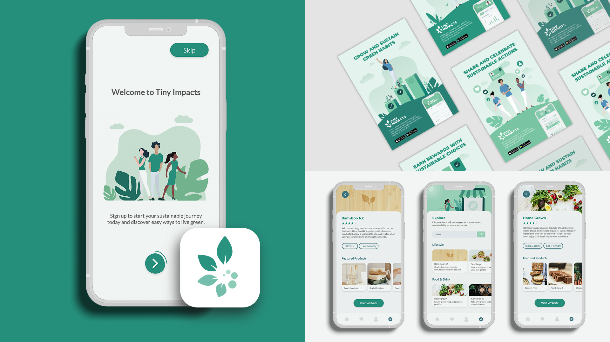

biography
Hi there! My name is Teagan Gorman and I will soon graduate with a Bachelor of Design majoring in Communication Design.
I’ve always had a passion for all things creative in life. What started as sketching, scrapbooking, and painting all throughout my childhood, has now been channeled into an exciting career path thanks to The University of Waikato. I knew as soon as I began my first year that this was the industry for me. I was excited by the things I was learning and enthusiastic about the work I was producing. During my three years at Waikato, I have had the opportunity to develop my creative and professional skills, as well as discover new passions along the way. I’ve found that my areas of interest lie in branding, print design, and UX design. My time here has provided me with many opportunities that have allowed me to grow as an individual and I can’t wait to see what the future holds.
project description
The world is growing increasingly concerned about the environment, and younger generations are growing eager to make a significant effort to live more sustainable lives. However, switching to sustainable living can seem difficult and overwhelming. Tiny Impacts looks to solve this problem by introducing its audience to a more sustainable lifestyle, one step at a time. Through the Tiny Impacts mobile app, users can work their way through tasks that help educate them on eco-friendly alternatives to their daily habits. Users can complete tasks at a pace that suits them, and Tiny Impacts rewards every step towards a more sustainable lifestyle - even the small ones.
Tiny Impacts’ main target audience are young adults living in New Zealand, who grow increasingly more sustainably driven as time goes by. With a strong, recognisable brand identity to connect with and a mobile application that is accessible at any time, reducing your environmental impact is easy.
Tiny Impacts is supported by a series of posters as marketing collateral, which were developed to encourage potential users to take that first step in their sustainable journey and download the mobile app. They make use of the Tiny Impacts brand, as well as visual elements from within the mobile app.
Tiny Impacts

For more information contact us
Email: degreeshow@waikato.ac.nz
Faculty phone: 0800 924 528
Faculty information: cs.waikato.ac.nz